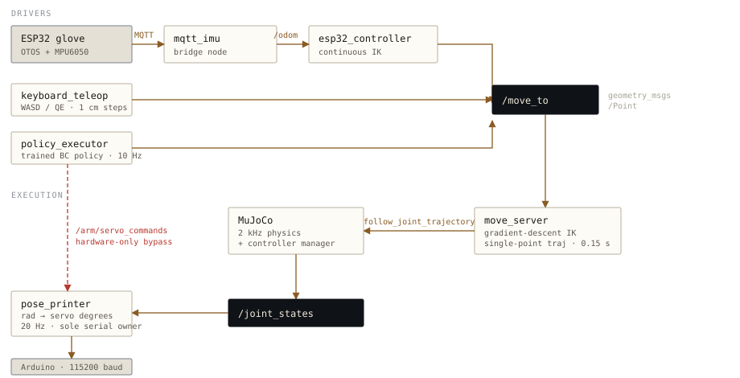

How it is built
Four very different things can command this arm, and none of them know about each other. They agree on one message on one topic, and a single node owns the serial port at the far end. That constraint is what makes it possible to swap a human for a policy, or a simulator for real hardware, without touching the code on either side.
One target topic
Glove, keyboard, and policy all publish a Cartesian point to /move_to. Adding a fifth driver means writing a publisher, nothing more.
One solver
A header-only gradient-descent IK solver is shared by every consumer, so the one-shot CLI and the real-time daemon can never disagree about kinematics.
One serial owner
pose_printer is the only node that opens /dev/ttyUSB0. Nothing else can contend for the port, and the hardware boundary lives in one file.

/move_to is interchangeable; everything downstream is shared. The dashed path is the hardware-only bypass used when there is no simulator in the loop.
pose_printer is pinned to use_sim_time: false so its 20 Hz timer keeps wall-clock rate — otherwise slowing the physics down would slow the physical servos down with it.Built on ROS2 Jazzy and Ubuntu 24.04, across sixteen packages — roughly 5,000 lines of Python, 1,100 of C++, and 300 of Arduino C++, plus the URDF, MJCF and controller configuration that ties them together.